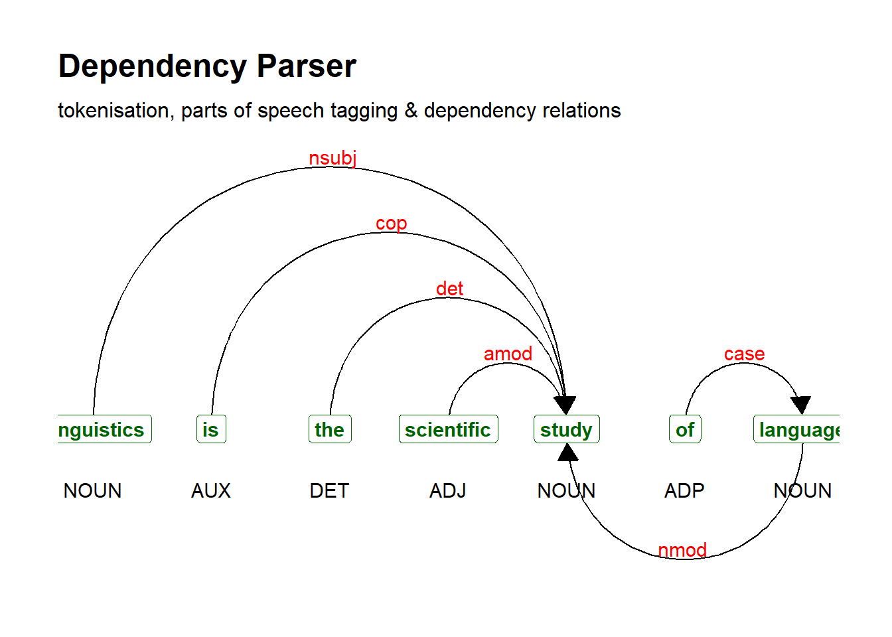
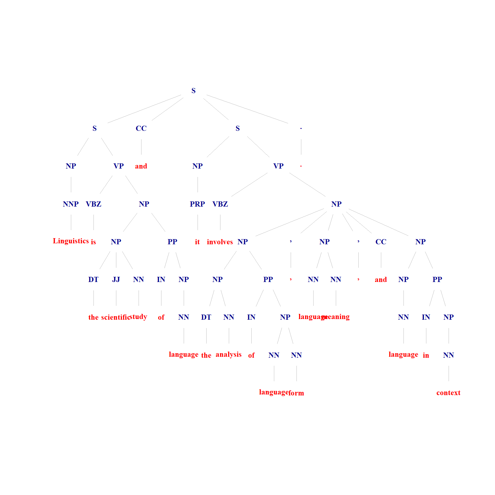

POS-Tagging and Syntactic Parsing with R
Martin Schweinberger
2022-03-18

Introduction
This tutorial introduces part-of-speech tagging and syntactic parsing using R.

This tutorial is aimed at beginners and intermediate users of R with the aim of showcasing how to annotate textual data with part-of-speech (pos) tags and how to syntactically parse textual data using R. The aim is not to provide a fully-fledged analysis but rather to show and exemplify selected useful methods associated with pos-tagging and syntactic parsing. Another highly recommendable tutorial on part-of-speech tagging in R with UDPipe is available here and another tutorial on pos-tagging and syntactic parsing by Andreas Niekler and Gregor Wiedemann can be found here (see Wiedemann and Niekler 2017).
The entire R Notebook for the tutorial can be downloaded here. If you want to render the R Notebook on your machine, i.e. knitting the document to html or a pdf, you need to make sure that you have R and RStudio installed and you also need to download the bibliography file and store it in the same folder where you store the Rmd file.
Here is a link to an interactive and simplified version of this tutorial on Google Colab. The interactive tutorial is based on a Jupyter notebook of this tutorial. This interactive Jupyter notebook allows you to execute code yourself and - if you copy the Jupyter notebook - you can also change and edit the notebook, e.g. you can change code and upload your own data.
Part-Of-Speech Tagging
Many analyses of language data require that we distinguish different parts of speech. In order to determine the word class of a certain word, we use a procedure which is called part-of-speech tagging (commonly referred to as pos-, pos-, or PoS-tagging). pos-tagging is a common procedure when working with natural language data. Despite being used quite frequently, it is a rather complex issue that requires the application of statistical methods that are quite advanced. In the following, we will explore different options for pos-tagging and syntactic parsing.
Parts-of-speech, or word categories, refer to the grammatical nature or category of a lexical item, e.g. in the sentence Jane likes the girl each lexical item can be classified according to whether it belongs to the group of determiners, verbs, nouns, etc. pos-tagging refers to a (computation) process in which information is added to existing text. This process is also called annotation. Annotation can be very different depending on the task at hand. The most common type of annotation when it comes to language data is part-of-speech tagging where the word class is determined for each word in a text and the word class is then added to the word as a tag. However, there are many different ways to tag or annotate texts.
Pos–tagging assigns part-of-speech tags to character strings (these represent mostly words, of course, but also encompass punctuation marks and other elements). This means that pos–tagging is one specific type of annotation, i.e. adding information to data (either by directly adding information to the data itself or by storing information in e.g. a list which is linked to the data). It is important to note that annotation encompasses various types of information such as pauses, overlap, etc. pos–tagging is just one of these many ways in which corpus data can be enriched. Sentiment Analysis, for instance, also annotates texts or words with respect to its or their emotional value or polarity.
Annotation is required in many machine-learning contexts because annotated texts are commonly used as training sets on which machine learning or deep learning models are trained that then predict, for unknown words or texts, what values they would most likely be assigned if the annotation were done manually. Also, it should be mentioned that by many online services offer pos-tagging (e.g. here or here.
When pos–tagged, the example sentence could look like the example below.
- Jane/NNP likes/VBZ the/DT girl/NN
In the example above, NNP stands for proper noun (singular), VBZ stands for 3rd person singular present tense verb, DT for determiner, and NN for noun(singular or mass). The pos-tags used by the openNLPpackage are the Penn English Treebank pos-tags. A more elaborate description of the tags can be found here which is summarised below:
Tag | Description | Examples |
CC | Coordinating conjunction | and, or, but |
CD | Cardinal number | one, two, three |
DT | Determiner | a, the |
EX | Existential there | There/EX was a party in progress |
FW | Foreign word | persona/FW non/FW grata/FW |
IN | Preposition or subordinating con | uh, well, yes |
JJ | Adjective | good, bad, ugly |
JJR | Adjective, comparative | better, nicer |
JJS | Adjective, superlative | best, nicest |
LS | List item marker | a., b., 1., 2. |
MD | Modal | can, would, will |
NN | Noun, singular or mass | tree, chair |
NNS | Noun, plural | trees, chairs |
NNP | Proper noun, singular | John, Paul, CIA |
NNPS | Proper noun, plural | Johns, Pauls, CIAs |
PDT | Predeterminer | all/PDT this marble, many/PDT a soul |
POS | Possessive ending | John/NNP 's/POS, the parentss/NNP '/POS distress |
PRP | Personal pronoun | I, you, he |
PRP$ | Possessive pronoun | mine, yours |
RB | Adverb | evry, enough, not |
RBR | Adverb, comparative | later |
RBS | Adverb, superlative | latest |
RP | Particle | RP |
SYM | Symbol | CO2 |
TO | to | to |
UH | Interjection | uhm, uh |
VB | Verb, base form | go, walk |
VBD | Verb, past tense | walked, saw |
VBG | Verb, gerund or present particip | walking, seeing |
VBN | Verb, past participle | walked, thought |
VBP | Verb, non-3rd person singular pr | walk, think |
VBZ | Verb, 3rd person singular presen | walks, thinks |
WDT | Wh-determiner | which, that |
WP | Wh-pronoun | what, who, whom (wh-pronoun) |
WP$ | Possessive wh-pronoun | whose, who (wh-words) |
WRB | Wh-adverb | how, where, why (wh-adverb) |
Assigning these pos-tags to words appears to be rather straight forward. However, pos-tagging is quite complex and there are various ways by which a computer can be trained to assign pos-tags. For example, one could use orthographic or morphological information to devise rules such as. . .
If a word ends in ment, assign the pos-tag
NN(for common noun)If a word does not occur at the beginning of a sentence but is capitalized, assign the pos-tag
NNP(for proper noun)
Using such rules has the disadvantage that pos-tags can only be assigned to a relatively small number of words as most words will be ambiguous – think of the similarity of the English plural (-(e)s) and the English 3rd person, present tense indicative morpheme (-(e)s), for instance, which are orthographically identical.Another option would be to use a dictionary in which each word is as-signed a certain pos-tag and a program could assign the pos-tag if the word occurs in a given text. This procedure has the disadvantage that most words belong to more than one word class and pos-tagging would thus have to rely on additional information.The problem of words that belong to more than one word class can partly be remedied by including contextual information such as. .
- If the previous word is a determiner and the following word is a common noun, assign the pos-tag
JJ(for a common adjective)
This procedure works quite well but there are still better options.The best way to pos-tag a text is to create a manually annotated training set which resembles the language variety at hand. Based on the frequency of the association between a given word and the pos-tags it is assigned in the training data, it is possible to tag a word with the pos-tag that is most often assigned to the given word in the training data.All of the above methods can and should be optimized by combining them and additionally including pos–n–grams, i.e. determining a pos-tag of an unknown word based on which sequence of pos-tags is most similar to the sequence at hand and also most common in the training data.This introduction is extremely superficial and only intends to scratch some of the basic procedures that pos-tagging relies on. The interested reader is referred to introductions on machine learning and pos-tagging such as e.g.https://class.coursera.org/nlp/lecture/149.
There are several different R packages that assist with pos-tagging texts (see Kumar and Paul 2016). In this tutorial, we will use the udpipe (Wijffels 2021) and the openNLP packages (Hornik 2019). Each of these has advantages and shortcomings and it is advantageous to try which result best matches one’s needs. That said, the udpipe package is really great as it is easy to use, covers a wide range of languages, is very flexible, and very accurate.
Preparation and session set up
This tutorial is based on R. If you have not installed R or are new to it, you will find an introduction to and more information how to use R here. For this tutorials, we need to install certain packages from an R library so that the scripts shown below are executed without errors. Before turning to the code below, please install the packages by running the code below this paragraph. If you have already installed the packages mentioned below, then you can skip ahead ignore this section. To install the necessary packages, simply run the following code - it may take some time (between 1 and 5 minutes to install all of the libraries so you do not need to worry if it takes some time).
# install packages
install.packages("tidyverse")
install.packages("igraph")
install.packages("tm")
install.packages("NLP")
install.packages("openNLP")
install.packages("openNLPdata")
install.packages("udpipe")
install.packages("textplot")
install.packages("ggraph")
install.packages("ggplot2")
install.packages("pacman")
install.packages("flextable")
# install phrasemachine
phrasemachineurl <- "https://cran.r-project.org/src/contrib/Archive/phrasemachine/phrasemachine_1.1.2.tar.gz"
install.packages(phrasemachineurl, repos=NULL, type="source")
# install parsent
pacman::p_load_gh(c("trinker/textshape", "trinker/parsent"))
# install klippy for copy-to-clipboard button in code chunks
remotes::install_github("rlesur/klippy")Now that we have installed the packages, we activate them as shown below.
# set options
options(stringsAsFactors = F) # no automatic data transformation
options("scipen" = 100, "digits" = 4) # suppress math annotation
# load packages
library(tidyverse)
library(igraph)
library(tm)
library(NLP)
library(openNLP)
library(openNLPdata)
library(udpipe)
library(textplot)
library(udpipe)
library(ggraph)
library(ggplot2)
library(igraph)
library(phrasemachine)
library(flextable)
# load function for pos-tagging objects in R
source("https://slcladal.github.io/rscripts/POStagObject.r")
# syntax tree drawing function
source("https://slcladal.github.io/rscripts/parsetgraph.R")
# activate klippy for copy-to-clipboard button
klippy::klippy()Once you have installed R and RStudio and initiated the session by executing the code shown above, you are good to go.
POS-Tagging with UDPipe
UDPipe was developed at the Charles University in Prague and the udpipe R package (Wijffels 2021) is an extremely interesting and really fantastic package as it provides a very easy and handy way for language-agnostic tokenization, pos-tagging, lemmatization and dependency parsing of raw text in R. It is particularly handy because it addresses and remedies major shortcomings that previous methods for pos-tagging had, namely
- it offers a wide range of language models (64 languages at this point)
- it does not rely on external software (like, e.g., TreeTagger, that had to be installed separately and could be challenging when using different operating systems)
- it is really easy to implement as one only need to install and load the
udpipepackage and download and activate the language model one is interested in - it allows to train and tune one’s own models rather easily
The available pre-trained language models in UDPipe are:
- Afrikaans: afrikaans-afribooms
- Ancient Greek:
- ancient_greek-perseus
- ancient_greek-proiel
- ancient_greek-perseus
- Arabic: arabic-padt
- Armenian: armenian-armtdp
- Basque: basque-bdt
- Belarusian: belarusian-hse
- bulgarian-btb
- Buryat: buryat-bdt
- Catalan: catalan-ancora
- Chinese:
- chinese-gsd
- chinese-gsdsimp
- classical_chinese-kyoto
- chinese-gsd
- Coptic: coptic-scriptorium
- Croatian: croatian-set
- Czech
- czech-cac
- czech-cltt
- czech-fictree
- czech-pdt
- czech-cac
- Danish: danish-ddt
- Dutch
- dutch-alpino
- dutch-lassysmall
- dutch-alpino
- English
- english-ewt
- english-gum
- english-lines
- english-partut
- english-ewt
- Estonian
- estonian-edt
- estonian-ewt
- estonian-edt
- Finnish
- finnish-ftb
- finnish-tdt
- finnish-ftb
- French
- french-gsd
- french-partut
- french-sequoia
- french-spoken
- french-gsd
- Galician
- galician-ctg
- galician-treegal
- galician-ctg
- German
- german-gsd
- german-hdt
- german-gsd
- Gothic: gothic-proiel
- Greek: greek-gdt
- Hebrew: hebrew-htb
- Hindi: hindi-hdtb
- Hungarian: hungarian-szeged
- Indonesian: indonesian-gsd
- Irish Gaelic: irish-idt
- Italian
- italian-isdt
- italian-partut
- italian-postwita
- italian-twittiro
- italian-vit
- italian-isdt
- Japanese: japanese-gsd
- Kazakh: kazakh-ktb
- Korean
- korean-gsd
- korean-kaist
- korean-gsd
- Kurmanji: kurmanji-mg
- Latin
- latin-ittb
- latin-perseus
- latin-proiel
- latin-ittb
- Latvian: latvian-lvtb
- Lithuanian
- lithuanian-alksnis
- lithuanian-hse
- lithuanian-alksnis
- Maltese: maltese-mudt
- Marathi: marathi-ufal
- North Sami: north_sami-giella
- Norwegian
- norwegian-bokmaal
- norwegian-nynorsk
- norwegian-nynorsklia
- norwegian-bokmaal
- old_church_slavonic-proiel
- Old French: old_french-srcmf
- Old Russian: old_russian-torot
- Persian: persian-seraji
- Polish
- polish-lfg
- polish-pdb
- polish-sz
- polish-lfg
- Portugese
- portuguese-bosque
- portuguese-br
- portuguese-gsd
- portuguese-bosque
- Romanian
- romanian-nonstandard
- romanian-rrt
- romanian-nonstandard
- Russian
- russian-gsd
- russian-syntagrus
- russian-taiga
- russian-gsd
- Sanskrit: sanskrit-ufal
- Scottish Gaelic: scottish_gaelic-arcosg
- Serbian: serbian-set
- Slovak: slovak-snk
- Slovenian
- slovenian-ssj
- slovenian-sst
- slovenian-ssj
- Spanish
- spanish-ancora
- spanish-gsd
- spanish-ancora
- Swedish
- swedish-lines
- swedish-talbanken
- swedish-lines
- Tamil: tamil-ttb
- Telugu: telugu-mtg
- Turkish: turkish-imst
- Ukrainian: ukrainian-iu
- Upper Sorbia: upper_sorbian-ufal
- Urdu: urdu-udtb
- Uyghur: uyghur-udt
- Vietnamese: vietnamese-vtb
- Wolof: wolof-wtb
The udipe R package also allows you to easily train your own models, based on data in CONLL-U format, so that you can use these for your own commercial or non-commercial purposes. This is described in the other vignette of this package which you can view by the command
vignette("udpipe-train", package = "udpipe")
To download any of these models, we can use the udpipe_download_model function. For example, to download the english-ewt model, we would use the call: m_eng <- udpipe::udpipe_download_model(language = "english-ewt").
We start by loading a text
# load text
text <- readLines("https://slcladal.github.io/data/testcorpus/linguistics06.txt", skipNul = T)
# clean data
text <- text %>%
str_squish() Now that we have a text that we can work with, we will download a pre-trained language model.
# download language model
m_eng <- udpipe::udpipe_download_model(language = "english-ewt")If you have downloaded a model once, you can also load the model directly from the place where you stored it on your computer. In my case, I have stored the model in a folder called udpipemodels
# load language model from your computer after you have downloaded it once
m_eng <- udpipe_load_model(file = here::here("udpipemodels", "english-ewt-ud-2.5-191206.udpipe"))We can now use the model to annotate out text.
# tokenise, tag, dependency parsing
text_anndf <- udpipe::udpipe_annotate(m_eng, x = text) %>%
as.data.frame() %>%
dplyr::select(-sentence)
# inspect
head(text_anndf, 10)## doc_id paragraph_id sentence_id token_id token lemma upos xpos
## 1 doc1 1 1 1 Linguistics Linguistic NOUN NNS
## 2 doc1 1 1 2 also also ADV RB
## 3 doc1 1 1 3 deals deal NOUN NNS
## 4 doc1 1 1 4 with with ADP IN
## 5 doc1 1 1 5 the the DET DT
## 6 doc1 1 1 6 social social ADJ JJ
## 7 doc1 1 1 7 , , PUNCT ,
## 8 doc1 1 1 8 cultural cultural ADJ JJ
## 9 doc1 1 1 9 , , PUNCT ,
## 10 doc1 1 1 10 historical historical ADJ JJ
## feats head_token_id dep_rel deps misc
## 1 Number=Plur 3 compound <NA> <NA>
## 2 <NA> 3 advmod <NA> <NA>
## 3 Number=Plur 0 root <NA> <NA>
## 4 <NA> 13 case <NA> <NA>
## 5 Definite=Def|PronType=Art 13 det <NA> <NA>
## 6 Degree=Pos 13 amod <NA> SpaceAfter=No
## 7 <NA> 8 punct <NA> <NA>
## 8 Degree=Pos 6 conj <NA> SpaceAfter=No
## 9 <NA> 10 punct <NA> <NA>
## 10 Degree=Pos 6 conj <NA> <NA>It can be useful to extract only the words and their pos-tags and convert them back into a text format (rather than a tabular format).
tagged_text <- paste(text_anndf$token, "/", text_anndf$xpos, collapse = " ", sep = "")
# inspect tagged text
tagged_text## [1] "Linguistics/NNS also/RB deals/NNS with/IN the/DT social/JJ ,/, cultural/JJ ,/, historical/JJ and/CC political/JJ factors/NNS that/WDT influence/VBP language/NN ,/, through/IN which/WDT linguistic/NN and/CC language/NN -/HYPH based/VBN context/NN is/VBZ often/RB determined/JJ ./. Research/VB on/IN language/NN through/IN the/DT sub-branches/NNS of/IN historical/JJ and/CC evolutionary/JJ linguistics/NNS also/RB focus/RB on/IN how/WRB languages/NNS change/VBP and/CC grow/VBP ,/, particularly/RB over/IN an/DT extended/JJ period/NN of/IN time/NN ./. Language/NN documentation/NN combines/VBZ anthropological/JJ inquiry/NN (/-LRB- into/IN the/DT history/NN and/CC culture/NN of/IN language/NN )/-RRB- with/IN linguistic/JJ inquiry/NN ,/, in/IN order/NN to/TO describe/VB languages/NNS and/CC their/PRP$ grammars/NNS ./. Lexicography/NNP involves/VBZ the/DT documentation/NN of/IN words/NNS that/WDT form/VBP a/DT vocabulary/NN ./. Such/PDT a/DT documentation/NN of/IN a/DT linguistic/JJ vocabulary/NN from/IN a/DT particular/JJ language/NN is/VBZ usually/RB compiled/VBN in/IN a/DT dictionary/NN ./. Computational/JJ linguistics/NNS is/VBZ concerned/JJ with/IN the/DT statistical/NN or/CC rule/NN -/HYPH based/VBN modeling/NN of/IN natural/JJ language/NN from/IN a/DT computational/JJ perspective/NN ./. Specific/JJ knowledge/NN of/IN language/NN is/VBZ applied/VBN by/IN speakers/NNS during/IN the/DT act/NN of/IN translation/NN and/CC interpretation/NN ,/, as/RB well/RB as/IN in/IN language/NN education/NN –/, the/DT teaching/NN of/IN a/DT second/JJ or/CC foreign/JJ language/NN ./. Policy/NN makers/NNS work/VBP with/IN governments/NNS to/TO implement/VB new/JJ plans/NNS in/IN education/NN and/CC teaching/NN which/WDT are/VBP based/VBN on/IN linguistic/JJ research/NN ./."POS-Tagging non-English texts
We can apply the same method for annotating, e.g. adding pos-tags, to other languages. For this, we could train our own model, or, we can use one of the many pre-trained language models that udpipe provides.
Let us explore how to do this by using example texts from different languages, here from German and Spanish (but we could also annotate texts from any of the wide variety of languages for which UDPipe provides pre-trained models.
We begin by loading a German and a Dutch text.
# load texts
gertext <- readLines("https://slcladal.github.io/data/german.txt")
duttext <- readLines("https://slcladal.github.io/data/dutch.txt")
# inspect texts
gertext; duttext## [1] "Sprachwissenschaft untersucht in verschiedenen Herangehensweisen die menschliche Sprache."## [1] "Taalkunde, ook wel taalwetenschap of linguïstiek, is de wetenschappelijke studie van de natuurlijke talen."Next, we install the pre-trained language models.
# download language model
m_ger <- udpipe::udpipe_download_model(language = "german-gsd")
m_dut <- udpipe::udpipe_download_model(language = "dutch-alpino")Or we load them from our machine (if we have downloaded and saved them before).
# load language model from your computer after you have downloaded it once
m_ger <- udpipe::udpipe_load_model(file = here::here("udpipemodels", "german-gsd-ud-2.5-191206.udpipe"))
m_dut <- udpipe::udpipe_load_model(file = here::here("udpipemodels", "dutch-alpino-ud-2.5-191206.udpipe"))Now, pos-tag the German text.
# tokenise, tag, dependency parsing of german text
ger_pos <- udpipe::udpipe_annotate(m_ger, x = gertext) %>%
as.data.frame() %>%
dplyr::summarise(postxt = paste(token, "/", xpos, collapse = " ", sep = "")) %>%
dplyr::pull(unique(postxt))
# inspect
ger_pos## [1] "Sprachwissenschaft/NN untersucht/VVFIN in/APPR verschiedenen/ADJA Herangehensweisen/NN die/ART menschliche/NN Sprache/NN ./$."And finally, we also pos-tag the Dutch text.
# tokenise, tag, dependency parsing of german text
nl_pos <- udpipe::udpipe_annotate(m_dut, x = duttext) %>%
as.data.frame() %>%
dplyr::summarise(postxt = paste(token, "/", xpos, collapse = " ", sep = "")) %>%
dplyr::pull(unique(postxt))
# inspect
nl_pos## [1] "Taalkunde/N|soort|ev|basis|zijd|stan ,/LET ook/BW wel/BW taalwetenschap/N|soort|ev|basis|zijd|stan of/VG|neven linguïstiek/N|soort|ev|basis|zijd|stan ,/LET is/WW|pv|tgw|ev de/LID|bep|stan|rest wetenschappelijke/ADJ|prenom|basis|met-e|stan studie/N|soort|ev|basis|zijd|stan van/VZ|init de/LID|bep|stan|rest natuurlijke/ADJ|prenom|basis|met-e|stan talen/N|soort|mv|basis ./LET"Dependency Parsing Using UDPipe
In addition to pos-tagging, we can also generate plots showing the syntactic dependencies of the different constituents of a sentence. For this, we generate an object that contains a sentence (in this case, the sentence Linguistics is the scientific study of language), and we then plot (or visualize) the dependencies using the textplot_dependencyparser fucntion.
# parse text
sent <- udpipe::udpipe_annotate(m_eng, x = "Linguistics is the scientific study of language") %>%
as.data.frame()
# inspect
head(sent)## doc_id paragraph_id sentence_id
## 1 doc1 1 1
## 2 doc1 1 1
## 3 doc1 1 1
## 4 doc1 1 1
## 5 doc1 1 1
## 6 doc1 1 1
## sentence token_id token
## 1 Linguistics is the scientific study of language 1 Linguistics
## 2 Linguistics is the scientific study of language 2 is
## 3 Linguistics is the scientific study of language 3 the
## 4 Linguistics is the scientific study of language 4 scientific
## 5 Linguistics is the scientific study of language 5 study
## 6 Linguistics is the scientific study of language 6 of
## lemma upos xpos feats
## 1 Linguistic NOUN NNS Number=Plur
## 2 be AUX VBZ Mood=Ind|Number=Sing|Person=3|Tense=Pres|VerbForm=Fin
## 3 the DET DT Definite=Def|PronType=Art
## 4 scientific ADJ JJ Degree=Pos
## 5 study NOUN NN Number=Sing
## 6 of ADP IN <NA>
## head_token_id dep_rel deps misc
## 1 5 nsubj <NA> <NA>
## 2 5 cop <NA> <NA>
## 3 5 det <NA> <NA>
## 4 5 amod <NA> <NA>
## 5 0 root <NA> <NA>
## 6 7 case <NA> <NA>We now generate the plot.
# generate dependency plot
dplot <- textplot::textplot_dependencyparser(sent, size = 3.5)
# show plot
dplot
POS-Tagging with openNLP
In R we can pos–tag large amounts of text not only by using udpipe but by various means. This section explores pos-tagging using the openNLP package. Using the openNLP package for pos-tagging works particularly well when the aim is to pos-tag newspaper texts as the openNLP package implements the Apache OpenNLPMaxent Part of Speech tagger and it comes with pre-trained models. Ideally, pos-taggers should be trained on data resembling the data to be pos-tagged.However, I do not know how to trained the Apache openNLP pos-tagger via R and it would be great if someone would provide a tutorial on how to do that. Using pre-trained models has the advantage that we do not need to train the pos-tagger ourselves. However, it also means that one has to rely on models trained on data that may not really resemble the data a at hand.This implies that using it for texts that differ from newspaper texts, i.e.the language the models have been trained on, does not work as well, as the model applies the probabilities of newspaper language to the language variety at hand. pos-tagging with the openNLP requires the NLP package and installing the models on which the openNLP package is based.
To pos-tag a text, we start by loading an example text into R.
# load corpus data
text <- readLines("https://slcladal.github.io/data/testcorpus/linguistics07.txt", skipNul = T)
# clean data
text <- text %>%
str_squish() . |
Related areas of study also includes the disciplines of semiotics (the study of direct and indirect language through signs and symbols), literary criticism (the historical and ideological analysis of literature, cinema, art, or published material), translation (the conversion and documentation of meaning in written/spoken text from one language or dialect onto another), and speech-language pathology (a corrective method to cure phonetic disabilities and dis-functions at the cognitive level). |
Now that the text data has been read into R, we can proceed with the part-of-speech tagging. To perform the pos-tagging, we load the function for pos-tagging, load the NLP and openNLP packages.
NOTE
You need to change the path that is used in the code below and include the path to en-pos-maxent.bin on your computer!
POStag <- function(object){
require("stringr")
require("NLP")
require("openNLP")
require("openNLPdata")
# define paths to corpus files
corpus.tmp <- object
# define sentence annotator
sent_token_annotator <- openNLP::Maxent_Sent_Token_Annotator()
# define word annotator
word_token_annotator <- openNLP::Maxent_Word_Token_Annotator()
# define pos annotator
pos_tag_annotator <- openNLP::Maxent_POS_Tag_Annotator(language = "en", probs = FALSE,
# WARNING: YOU NEED TO INCLUDE YOUR OWN PATH HERE!
model = "C:\\Users\\marti\\OneDrive\\Dokumente\\R\\win-library\\4.1\\openNLPdata\\models\\en-pos-maxent.bin")
# convert all file content to strings
Corpus <- lapply(corpus.tmp, function(x){
x <- as.String(x) } )
# loop over file contents
lapply(Corpus, function(x){
y1 <- NLP::annotate(x, list(sent_token_annotator, word_token_annotator))
y2<- NLP::annotate(x, pos_tag_annotator, y1)
y2w <- subset(y2, type == "word")
tags <- sapply(y2w$features, '[[', "POS")
r1 <- sprintf("%s/%s", x[y2w], tags)
r2 <- paste(r1, collapse = " ")
return(r2) } )
}We now apply this function to our text.
# pos tagging data
textpos <- POStag(object = text). |
Related/JJ areas/NNS of/IN study/NN also/RB includes/VBZ the/DT disciplines/NNS of/IN semiotics/NNS (/-LRB- the/DT study/NN of/IN direct/JJ and/CC indirect/JJ language/NN through/IN signs/NNS and/CC symbols/NNS )/-RRB- ,/, literary/JJ criticism/NN (/-LRB- the/DT historical/JJ and/CC ideological/JJ analysis/NN of/IN literature/NN ,/, cinema/NN ,/, art/NN ,/, or/CC published/JJ material/NN )/-RRB- ,/, translation/NN (/-LRB- the/DT conversion/NN and/CC documentation/NN of/IN meaning/NN in/IN written/spoken/VBN text/NN from/IN one/CD language/NN or/CC dialect/NN onto/IN another/DT )/-RRB- ,/, and/CC speech-language/NN pathology/NN (/-LRB- a/DT corrective/JJ method/NN to/TO cure/VB phonetic/JJ disabilities/NNS and/CC dis-functions/NNS at/IN the/DT cognitive/JJ level/NN )/-RRB- ./. |
The resulting vector contains the part-of-speech tagged text and shows that the function fulfills its purpose in automatically pos-tagging the text. The pos-tagged text could now be processed further, e.g. by extracting all adjectives in the text or by creating concordances of nouns ending in ment.
Syntactic Parsing with openNLP
Parsing refers to another type of annotation in which either structural information (as in the case of XML documents) or syntactic relations are added to text. As syntactic parsing is commonly more relevant in the language sciences, the following will focus only on syntactic parsing. syntactic parsing builds on pos-tagging and allows drawing syntactic trees or dependencies. Unfortunately, syntactic parsing still has relatively high error rates when dealing with language that is not very formal. However, syntactic parsing is very reliable when dealing with written language.
text <- readLines("https://slcladal.github.io/data/english.txt")
# convert character to string
s <- as.String(text)
# define sentence and word token annotator
sent_token_annotator <- openNLP::Maxent_Sent_Token_Annotator()
word_token_annotator <- openNLP::Maxent_Word_Token_Annotator()
# apply sentence and word annotator
a2 <- NLP::annotate(s, list(sent_token_annotator, word_token_annotator))
# define syntactic parsing annotator
parse_annotator <- openNLP::Parse_Annotator()
# apply parser
p <- parse_annotator(s, a2)
# extract parsed information
ptexts <- sapply(p$features, '[[', "parse")
ptexts## [1] "(TOP (S (S (NP (NNP Linguistics)) (VP (VBZ is) (NP (NP (DT the) (JJ scientific) (NN study)) (PP (IN of) (NP (NN language)))))) (CC and) (S (NP (PRP it)) (VP (VBZ involves) (NP (NP (NP (DT the) (NN analysis)) (PP (IN of) (NP (NN language) (NN form))))(, ,) (NP (NN language) (NN meaning))(, ,) (CC and) (NP (NP (NN language)) (PP (IN in) (NP (NN context)))))))(. .)))"# read into NLP Tree objects.
ptrees <- lapply(ptexts, Tree_parse)
# show frist tree
ptrees[[1]]## (TOP
## (S
## (S
## (NP (NNP Linguistics))
## (VP
## (VBZ is)
## (NP
## (NP (DT the) (JJ scientific) (NN study))
## (PP (IN of) (NP (NN language))))))
## (CC and)
## (S
## (NP (PRP it))
## (VP
## (VBZ involves)
## (NP
## (NP
## (NP (DT the) (NN analysis))
## (PP (IN of) (NP (NN language) (NN form))))
## (, ,)
## (NP (NN language) (NN meaning))
## (, ,)
## (CC and)
## (NP (NP (NN language)) (PP (IN in) (NP (NN context)))))))
## (. .)))These trees can, of course, also be shown visually, for instance, in the form of a syntax trees (or tree dendrogram).
# load function
source("https://slcladal.github.io/rscripts/parsetgraph.R")
# generate syntax tree
parse2graph(ptexts[1], leaf.color='red',
# to put sentence in title (not advisable for long sentences)
#title = stringr::str_squish(stringr::str_remove_all(ptexts[1], "\\(\\,{0,1}[A-Z]{0,4}|\\)")),
margin=-0.05,
vertex.color=NA,
vertex.frame.color=NA,
vertex.label.font=2,
vertex.label.cex=.75,
asp=.8,
edge.width=.5,
edge.color='gray',
edge.arrow.size=0)
Syntax trees are very handy because the allow us to check how reliable the parser performed.
We can use the get_phrase_type_regex function from the parsent package written by Tyler Rinker to extract phrases from the parsed tree.
pacman::p_load_gh(c("trinker/textshape", "trinker/parsent"))
nps <- get_phrase_type_regex(ptexts[1], "NP") %>%
unlist()
# inspect
nps## [1] "(NP (NNP Linguistics))"
## [2] "(NP (NP (DT the) (JJ scientific) (NN study)) (PP (IN of) (NP (NN language))))"
## [3] "(NP (PRP it))"
## [4] "(NP (NP (NP (DT the) (NN analysis)) (PP (IN of) (NP (NN language) (NN form))))(, ,) (NP (NN language) (NN meaning))(, ,) (CC and) (NP (NP (NN language)) (PP (IN in) (NP (NN context)))))"We can now extract the leaves from the text to get the parsed object.
nps_text <- stringr::str_squish(stringr::str_remove_all(nps, "\\(\\,{0,1}[A-Z]{0,4}|\\)"))
# inspect
nps_text## [1] "Linguistics"
## [2] "the scientific study of language"
## [3] "it"
## [4] "the analysis of language form , language meaning , and language in context"Unfortunately, we can only extract top level phrases (the NPs with the NPs are npt extracted separately).
In order to extract all phrases, we can use the phrasemachine from the CRAN archive.
We now load the phrasemachine package and pos-tag the text(s) (we will simply re-use the English text we pos-tagged before.)
# pos tag text
tagged_documents <- phrasemachine::POS_tag_documents(text)## Currently tagging document 1 of 1# inspect
tagged_documents## $Document_1
## $Document_1$tokens
## [1] "Linguistics" "is" "the" "scientific" "study"
## [6] "of" "language" "and" "it" "involves"
## [11] "the" "analysis" "of" "language" "form"
## [16] "," "language" "meaning" "," "and"
## [21] "language" "in" "context" "."
##
## $Document_1$tags
## [1] "NNP" "VBZ" "DT" "JJ" "NN" "IN" "NN" "CC" "PRP" "VBZ" "DT" "NN"
## [13] "IN" "NN" "NN" "," "NN" "NN" "," "CC" "NN" "IN" "NN" "."In a next step, we can use the extract_phrases function to extract phrases.
#extract phrases
phrases <- phrasemachine::extract_phrases(tagged_documents,
regex = "(A|N)*N(PD*(A|N)*N)*",
maximum_ngram_length = 8,
minimum_ngram_length = 1)## Extracting phrases from document 1 of 1# inspect
phrases## [[1]]
## [1] "Linguistics" "scientific_study"
## [3] "scientific_study_of_language" "study"
## [5] "study_of_language" "language"
## [7] "analysis" "analysis_of_language"
## [9] "analysis_of_language_form" "language"
## [11] "language_form" "form"
## [13] "language" "language_meaning"
## [15] "meaning" "language"
## [17] "language_in_context" "context"Now, we have all noun phrases that occur in the English sample text.
That’s it for this tutorial. We hope that you have enjoyed this tutorial and learned how to annotate texts using language models and perform pos-tagging and dependency parsing of English texts as well as texts in other languages.
Citation & Session Info
Schweinberger, Martin. 2022. POS-Tagging and Syntactic Parsing with R. Brisbane: The University of Queensland. url: https://slcladal.github.io/tagging.html (Version 2022.03.18).
@manual{schweinberger2022pos,
author = {Schweinberger, Martin},
title = {pos-Tagging and Syntactic Parsing with R},
note = {https://slcladal.github.io/tagging.html},
year = {2022},
organization = "The University of Queensland, School of Languages and Cultures},
address = {Brisbane},
edition = {2022.03.18}
}sessionInfo()## R version 4.1.2 (2021-11-01)
## Platform: x86_64-w64-mingw32/x64 (64-bit)
## Running under: Windows 10 x64 (build 19043)
##
## Matrix products: default
##
## locale:
## [1] LC_COLLATE=German_Germany.1252 LC_CTYPE=German_Germany.1252
## [3] LC_MONETARY=German_Germany.1252 LC_NUMERIC=C
## [5] LC_TIME=German_Germany.1252
##
## attached base packages:
## [1] stats graphics grDevices datasets utils methods base
##
## other attached packages:
## [1] parsent_0.1.0 textshape_1.7.4 phrasemachine_1.1.2
## [4] ggraph_2.0.5 textplot_0.2.1 udpipe_0.8.8
## [7] openNLPdata_1.5.3-4 openNLP_0.2-7 tm_0.7-8
## [10] NLP_0.2-1 igraph_1.2.11 forcats_0.5.1
## [13] stringr_1.4.0 purrr_0.3.4 readr_2.1.2
## [16] tidyr_1.2.0 tibble_3.1.6 ggplot2_3.3.5
## [19] tidyverse_1.3.1 dplyr_1.0.8 flextable_0.7.0
##
## loaded via a namespace (and not attached):
## [1] fs_1.5.2 lubridate_1.8.0 httr_1.4.2 rprojroot_2.0.2
## [5] tools_4.1.2 backports_1.4.1 utf8_1.2.2 R6_2.5.1
## [9] DBI_1.1.2 colorspace_2.0-3 withr_2.5.0 gridExtra_2.3
## [13] tidyselect_1.1.2 compiler_4.1.2 cli_3.2.0 rvest_1.0.2
## [17] coreNLPsetup_0.0.1 pacman_0.5.1 xml2_1.3.3 officer_0.4.1
## [21] labeling_0.4.2 slam_0.1-50 scales_1.1.1 systemfonts_1.0.4
## [25] digest_0.6.29 rmarkdown_2.5 base64enc_0.1-3 pkgconfig_2.0.3
## [29] htmltools_0.5.2 dbplyr_2.1.1 fastmap_1.1.0 highr_0.9
## [33] rlang_1.0.2 readxl_1.3.1 rstudioapi_0.13 farver_2.1.0
## [37] generics_0.1.2 jsonlite_1.8.0 zip_2.2.0 magrittr_2.0.2
## [41] Matrix_1.4-0 Rcpp_1.0.8.2 munsell_0.5.0 fansi_1.0.2
## [45] viridis_0.6.2 gdtools_0.2.4 lifecycle_1.0.1 stringi_1.7.6
## [49] yaml_2.3.5 MASS_7.3-55 grid_4.1.2 ggrepel_0.9.1
## [53] parallel_4.1.2 crayon_1.5.0 lattice_0.20-45 graphlayouts_0.8.0
## [57] haven_2.4.3 hms_1.1.1 klippy_0.0.0.9500 knitr_1.37
## [61] pillar_1.7.0 uuid_1.0-3 reprex_2.0.1 glue_1.6.2
## [65] evaluate_0.15 data.table_1.14.2 renv_0.15.4 modelr_0.1.8
## [69] tweenr_1.0.2 vctrs_0.3.8 tzdb_0.2.0 cellranger_1.1.0
## [73] gtable_0.3.0 polyclip_1.10-0 assertthat_0.2.1 xfun_0.30
## [77] ggforce_0.3.3 broom_0.7.12 tidygraph_1.2.0 viridisLite_0.4.0
## [81] rJava_1.0-6 ellipsis_0.3.2 here_1.0.1References
Hornik, Kurt. 2019. “OpenNLP: Apache Opennlp Tools Interface.” https://cran.r-project.org/web/packages/openNLP/index.html.
Kumar, Ashish, and Avinash Paul. 2016. Mastering Text Mining with R. Packt Publishing Ltd.
Wiedemann, Gregor, and Andreas Niekler. 2017. “Hands-on: A Five Day Text Mining Course for Humanists and Social Scientists in R.” In Proceedings of the Workshop on Teaching NLP for Digital Humanities (Teach4DH2017), Berlin, Germany, September 12, 2017., 57–65. http://ceur-ws.org/Vol-1918/wiedemann.pdf.
Wijffels, Jan. 2021. Udpipe: Tokenization, Parts of Speech Tagging, Lemmatization and Dependency Parsing with the ’Udpipe’ ’Nlp’ Toolkit. https://CRAN.R-project.org/package=udpipe.